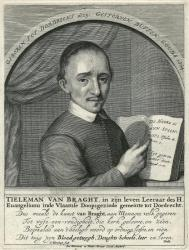

Thieleman J. van Braght
(29 January 1625 ¡V 7 October 1664)

was the Anabaptist
author of the Martyrs Mirror or The Bloody Theater, first published in
Holland in 1660 in Dutch.
Van Braght was born in Dordrecht. His major work claimed to document the
stories and testimonies of various early Protestants and opponents of the
Roman Catholic Church who died as martyrs. The full title of the book is The
Bloody Theater or Martyrs Mirror of the Defenseless Christians who baptized
only upon confession of faith, and who suffered and died for the testimony
of Jesus, their Saviour, from the time of Christ to the year A.D. 1660. The
use of the word "defenseless" in this case refers to the Anabaptist belief
in non-resistance.
Wikipedia.org
This tribute was paid by
Van Braght to the martyr, Gerardus, who for the testimony of Jesus Christ
went singing before his companions, five other men, two women, and a girl,
on the way to burning at the stake in Cologne, Germany, A. D. 1163.
This hymn by van Braght
was arranged to commemorate the 450th Anniversary of the founding of the
Anabaptist-Mennonite Church (1525-1975).
John J. Overholt was born
to an Amish family of limited means in the state of Ohio in 1918. As a child
he was soon introduced to his father's personal collection of gospel songs
and hymns, which was to have a marked influence on his later life. With his
twin brother Joe, he early was exposed to the Amish-Mennonite tradition
hymn-singing and praising worship.
An early career in
Christian service led to a two-year period of relief work in the country of
Poland following World War II. During that interim he began to gather many
European songs and hymns as a personal hobby, not realizing that these
selections would become invaluable to The Christian Hymnary which
was begun in 1960 and completed twelve years later in 1972, with a
compilation of 1000 songs, hymns and chorales. (The largest Menn. hymnal).
A second hymnal was begun
simultaneously in the German language entitled Erweckungs
Lieder Nr.1 which was brought to completion in 1986. This
hymnal has a total of 200 selections with a small addendum of English hymns.
Mr. Overholt married in
1965 to an accomplished soprano Vera Marie Sommers, who was not to be
outdone by her husband's creativity and compiled a hymnal of 156 selections
entitled Be Glad and Sing, directed to children and
youth and first printed in 1986.
During this later career
of hymn publishing, Mr. Overholt also found time for Gospel team work
throughout Europe. At this writing he is preparing for a 5th consecutive
tour which he arranges and guides. The countries visited will be Belgium,
Switzerland, France, Germany, Poland, USSR and Romania.
Mr. Overholt was called to
the Christian ministry in 1957 and resides at Sarasota, Florida where he is
co-minister of a Beachy Amish-Mennonite Church.
Five children were born to
this family and all enjoy worship in song.
--Letter from Hannah
Joanna Overholt to Mary Louise VanDyke, 10 October 1990, DNAH
Archives. Photo enclosed.
This song tribute was paid by Tieleman Jansz van Braght to the martyr
Gerardus, who for the testimony of Jesus Christ went singing before his
companions, five other men, two women and a girl, on the way to burning at the
stake in Cologne, Germany, AD 1163.
(This song can be found in the hymnal 'Christian Hymnary' and in the CD
'Anabaptist Martyr Hymns' recorded by the Overholt Family. For further
information regarding the hymnal and CD, please contact CHRISTIAN HYMNARY
PUBLISHERS - P.O. Box 7159 Pinecraft, Sarasota, Florida 34278 U.S.A.)